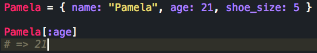
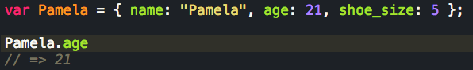

Back
Ruby Hashes vs. JavaScript Objects
In this entry I will compare Ruby hashes with Javascript object. A JS object can be used in similar fashion to a Ruby hash when it comes to storing information about a real-life obect that come in pairs. For example, you want to represent a person and it will contain charactersitics about said person. Each charactersitic should be paired with a key that tells us what about the person it represents, so for example, "eye color" could be paired with "brown" and "height" with "177cm". We could use a hash or an object, depending if we are working in Ruby or JS respectively.
If you are working in Ruby the syntax for a hash is as follows...
If you are on JS the syntax for an object is as follows...
As you can see the syntax is quite similar, we can use ":" to assign a key (left) to a value (right) in both languages, although keep in mind that "=>" instead of ":" is common in Ruby; and the syntax for calling a value is similar as we call it by its respective key, but JS uses dot notation and Ruby uses brackets. Another important syntactical difference is the fact that in JS we need to declare a variable with "var" while in Ruby it is implied by simply setting a string equal to something. In that respect I find ruby to me more intuitive.
Another important difference is that JS objects can take a function as a variable, because in Ruby functions are not objects and values can only be objects. Objects can play a similar role as hashes do in Ruby but because of this difference they can also play a similar role as Ruby classes.
I hope you took something from this entry and until next time!